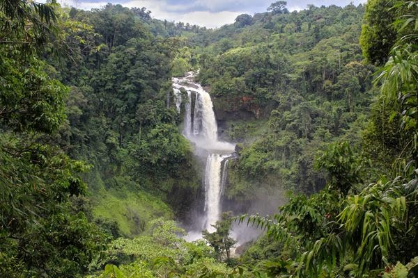
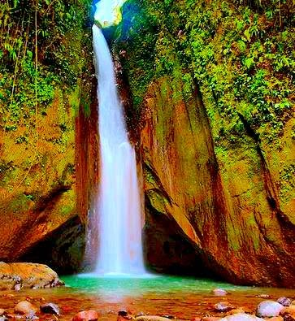
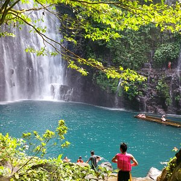

Davao del Sur is dotted with hidden cascades and untouched forests. Tudaya Falls, located in Santa Cruz, plunges dramatically into a deep catching basin and is one of the tallest waterfalls in the region. Meanwhile, Virgin Falls in Kapatagan offers a serene, icy-cold retreat surrounded by dense foliage. These nature trails are perfect for day hikes and nature photography.
Stand in awe at the base of waterfalls plunging from over a hundred meters high.
Hike through untouched jungles to find secret, multi-tiered waterfalls.
Take a freezing, refreshing plunge in natural pools fed by mountain springs.
The rugged, volcanic landscape of Davao del Sur is veined with pristine rivers that create spectacular waterfalls. Trekking to these cascades is a rite of passage for nature lovers, offering a rewarding cool-down after navigating the dense tropical jungles. The undisputed king of these falls is Tudaya, requiring a challenging hike but rewarding you with a massive, roaring curtain of water. For a more serene experience, Virgin Falls in Kapatagan is enveloped by quiet forests and giant ferns. Whether you want a hardcore trek or a short nature walk, there is a cascade waiting for you.

One of the tallest in the region, dropping dramatically into a deep, misty catching basin.

A tranquil, icy-cold retreat located in the cool highlands of Kapatagan, perfect for relaxing.

A beautiful, multi-tiered waterfall hidden deep within the Mt. Apo Natural Park.
Fly to Francisco Bangoy International Airport in Davao City, then take a bus south.
November to May is the dry season — ideal for outdoor activities and beach trips.
Davao del Sur offers affordable accommodations, food, and transport options.